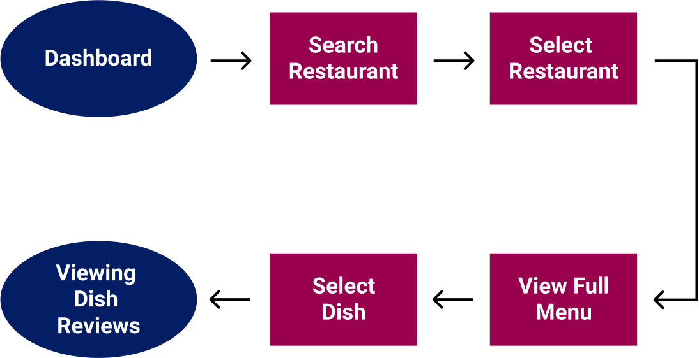

EVALUEAT
Find your inner critic.

Roles
UX Designer
UI Designer
Strategy
Branding
Information
ArchitectureInteraction Design
Steps
User Surveys
SWOT Analysis
User Personas/Flows
Wireframes
Branding/Mockups
Usability Tests
Prototype
UX Designer
UI Designer
Strategy
Branding
Information
Architecture
Interaction Design
User Surveys
SWOT Analysis
User Personas/Flows
Wireframes
Branding/Mockups
Usability Tests
Prototype
While there are many apps available that can help you to find reviews
for a restaurant, at this point there is no viable way to see reviews
for individual menu items helping the customer in deciding what to order.
We wanted to solve this problem and create an app that would allow
restaurant patrons to view specific ratings and reviews for each item on a
restaurant’s menu effectively assisting them in knowing what to order.
I came up with this business idea and managed the project starting from
brainstorming the idea and ending with prototypes for both mobile and
desktop. For the UX portion of the project, I conducted Competitive
Analysis, User Surveys, User Personas,
User Stories & Flows,
Wireframes, and Usability Tests.
For the UI Portion of the project, I created the
Branding & Logo Design, the Style Guide,
the High Fidelity Mockups, and the prototypes for Desktop and
Mobile. Throughout the process, I used Figma, Sketch,
Invision, and Maze to make my project come to life.
Our task was to create an app that would allow restaurant patrons to see reviews not only for a restaurant but also for each individual dish that the restaurant serves. We wanted to allow customers to view dish reviews, search for dishes by restaurant or menu item, write reviews on their culinary experiences. The goal was to create a simple, attractive, and user friendly app.
Our solution was EvaluEat-- A simple, user friendly, and original dish review app that will allow our users to see a restaurant’s menu and see their Top Dishes as well as reviews for each dish the restaurant offers. Our User Survey indicated that our users wanted to easily see top rated dishes, search for menu items, and write a review with a rating, detailed review, and optional photo. Using this information, we designed EvaluEat which will be the first dish review app of its kind.
EvaluEat was developed to give our users the ability to always be satisfied with their restaurant order but allowing them to see ratings & reviews for individual menu items. This will allow our users to order the highest rated menu items and will give feedback to the restaurant on what they need to improve. We started with this idea and built EvaluEat using the following process.
Before starting our design, we wanted to ensure that we were designing what our users both wanted and could use. To research this further, we created a user survey that asked how much reviews affect our users’ decision making, what type of review has the most credibility, whether seeing reviews on a menu item would help them decide what to order, whether they would write a review themselves, etc.
61.1%
are often affected by reviews
55.6%
think photos help decisions
38.9%
want a rating, review, and photo
94.4%
would order based on dish reviews
77.8%
would write dish reviews
94.4%
would write reviews with incentive
After we conducted our survey, we went on to perform
a competitive analysis
for EvaluEat’s competitors looking for their strengths and flaws. We
conducted a SWOT analysis of three different apps: Yelp, Bite, and Google.
Bite’s strengths were that they had no major competitors, high app store
ratings, and a unique idea. However, their weaknesses were a common brand
name, being relatively unknown, and not having a large customer base to
write reviews.
Yelp’s strengths are that they are widely known, they cover
a lot of locations, and they have lots of photos and reviews. Their
weaknesses were that you have to read through a whole restaurant review
looking for a dish review, not a very user friendly interface, and only
having reviews on the restaurant as a whole.
Google’s strengths here are the
massive user base, a very user friendly interface, and the ability to search
within a particular area. Their weaknesses for the purpose of this project
are the inability to rate dishes and the inability to search for a dish.
To more thoroughly understand our users to make sure we were designing EvaluEat for them, we created user personas.
25 years old | San Francisco, CA
Jasmine often has to take her clients out for dinner and wants to order the best dish at each restaurant. She usually asks the waiter for advice, but would like a more formal way to know what’s best.
• Order the best option at every restaurant
• Read reviews to help decide what to order
• Write reviews to help others
• Unable to be sure which dish is best
• Has to rely on just the waiter’s opinion
42 years old | Seattle, WA
Mila moved from Lima and misses Peruvian food. Seattle has many Peruvian restaurants, but she hasn’t found an authentic one. She wants to find her favorite Peruvian dish Lomo Saltado.
• Find authentic Peruvian food without trying every option
• Search for Lomo Saltado
• Unable to know which restaurants are authentic
• Sees reviews for entire restaurants but not for each dish
51 years old | New York, NY

Matias owns an Asian Fusion restaurant with a satisfied customer base. Since his dishes are unique, he relies on feedback but finds it hard to get honest critiques just by asking customers face to face.
• Own the best Asian Fusion spot in NYC
• Get honest feedback from his patrons
• Change and improve his recipes
• Unable to get feedback
• Doesn’t know which dishes are great and which need work
We then created user stories
to determine which actions are high, medium, and low priority.
Some high priority user stories included:
Our high priority user stories were then converted into user flows to map each process from point A to point B.
After our research was complete, we moved on to create wireframes & usability tests. We used our user flows to create wireframes for each high priority user story creating a clickable prototype with Invision.

We tested this prototype to see which processes we could improve to make our app user friendly. We asked our participants to complete the following tasks:
Task #1:
Create an accountTask #2:
Search for a dish nearbyTask #3:
Find dish reviewsTask #4:
Write a review| 100% | were able to create an account |
| 33% | wanted to find dish reviews by going to the menu first |
| 44% | felt the process to write a review was too long |
| 22% | had trouble finding how to start writing a review |
The primary change we made based on our testers' feedback was to write a review all on one screen instead of on multiple screens
.Another key change that we made was to make it easier to find how to write a review. We added the option to find it either in the bottom nav bar by clicking "Review", in the upper dropdown menu, or by clicking "My Account" also in the bottom nav bar.
After incorporating these changes, we proceeded to the visual design
portion of our project. We started by coming up with a name. We knew we
wanted to name the app something to do with food and reviews. You can see
some of our brainstorming below.
After deciding on the name EvaluEat, we turned our focus to designing
a logo. The logo had several iterations, but we decided on something simple with
a touch of whimsey that could work well for both desktop and mobile. My original sketches and
finished logo are below.

Then, we moved on to create our style guide. with a color scheme, typography, images, and more. Using this branding, we moved on to create our final mockups.
With our style guide and logo in mind, we created mockups screens for both mobile and desktop. These screens were in full color and after many drafts and changes, we created both a mobile prototype and desktop prototype with Invision.

When we were finished, we conducted another usability test to see how potential users would interact with our finished design.
| 50% | took an indirect route to find dish reviews |
| 30% | wanted to write a review directly from the restaurant profile |
| 10% | wanted darker search fields |
We took this feedback into account and incorporated several changes into our design. The most critical change was to utilize two different options to find dish reviews-- One via the restaurant profile page and on via the restaurant menu page.
Another key change was to add the ability to write a review from the restaurant profile.
After many drafts and multiple tests, our final prototype was ready.
During this project, I began to further appreciate the necessity of Usability Tests. For this project, I had more participants for my usability tests and was able to find issues that I likely wouldn’t have found if I had only tested a few people. Having a larger tester base means that I get more opinions and diverse feedback which I can then incorporate into my design. When we started, I was not sure about what features to have and whether there was a necessity for such an app. However, after completing the process, I am thrilled to say that I think EvaluEat will be a strong competitor in the market and will fill in the gap of restaurant reviewing that other apps have not yet filled.